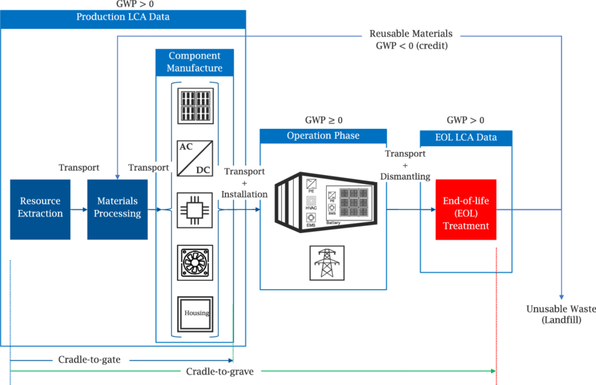
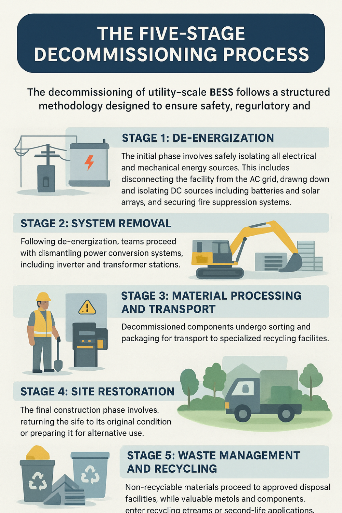
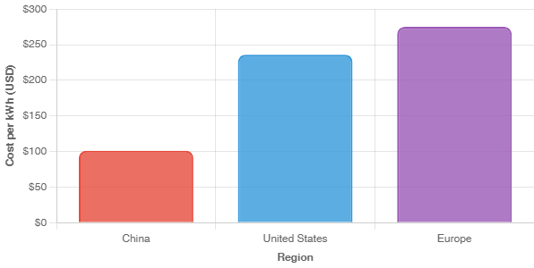
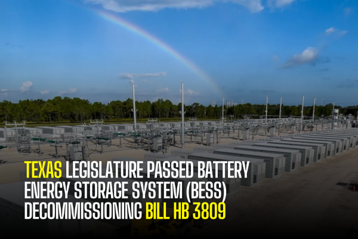
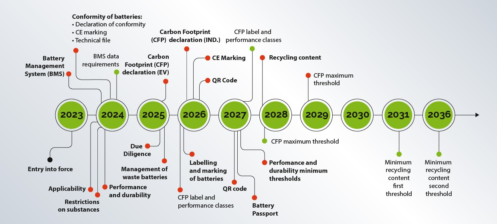
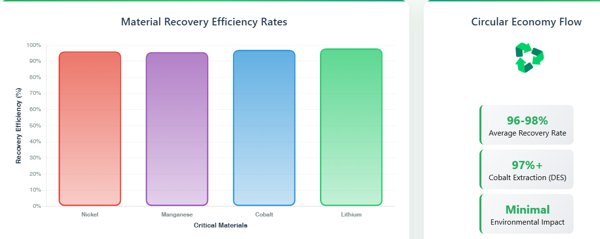
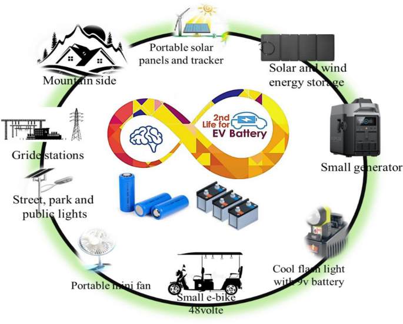
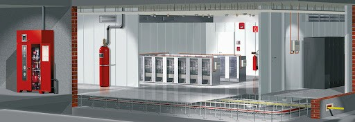
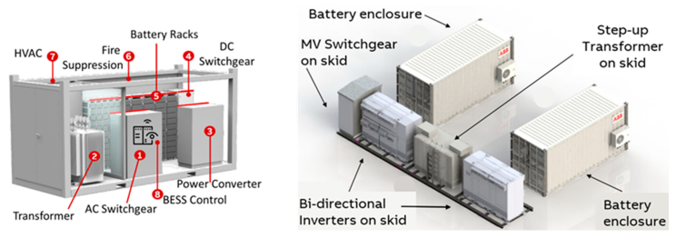
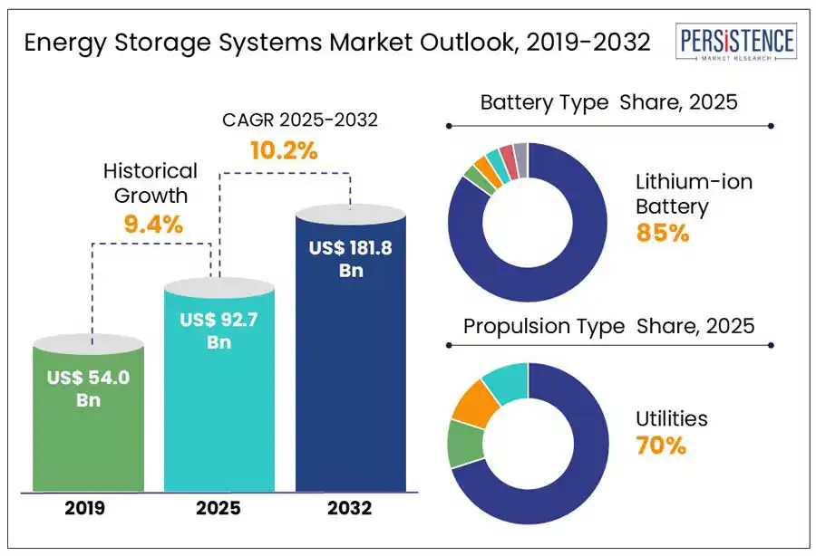

As the global renewable energy transition accelerates, utility-scale Battery Energy Storage Systems (BESS) have emerged as critical infrastructure for grid stability and renewable integration. However, with BESS lifespans typically ranging from 10-20 years, the industry faces an impending wave of end-of-life systems requiring comprehensive management strategies. This article explores the multifaceted challenges and solutions for sustainable BESS decommissioning, from regulatory frameworks to recycling technologies.
The Lifecycle Reality of Utility-Scale BESS
Battery Energy Storage Systems represent a cornerstone technology for managing the intermittency of renewable energy sources. For nickel-manganese-cobalt (NMC) batteries, operational lifespan typically ranges from 3,000 to 7,000 cycles at 80% depth of discharge, translating to approximately 10-15 years of service. Lithium-iron-phosphate (LFP) batteries demonstrate superior longevity with 4,000 to 10,000 cycles, extending operational life to 15-20 years.

Several factors influence battery degradation rates, including depth of discharge cycles, temperature extremes, and high-power cycling demands for frequency control ancillary services. Proper thermal management and avoiding prolonged high or low state-of-charge conditions can significantly extend battery lifespan.
The Five-Stage Decommissioning Process
The decommissioning of utility-scale BESS follows a structured methodology designed to ensure safety, regulatory compliance, and environmental responsibility. The process typically unfolds across five distinct stages:
Stage 1: De-energization
The initial phase involves safely isolating all electrical and mechanical energy sources. This complex undertaking includes disconnecting the facility from the AC grid, drawing down and isolating DC sources including batteries and solar arrays, and securing fire suppression systems. For large-scale systems, de-energization proves labor-intensive, requiring manual removal of hundreds of battery modules, thousands of mounting components, and extensive cable networks.
Stage 2: System Removal
Following de-energization, teams proceed with dismantling power conversion systems, including inverter and transformer stations. This stage demands careful handling of integrated battery storage units, which require proper site dismantling and packaging according to Department of Transportation regulations. All electrical cables, conduits, and substation equipment must be systematically removed and prepared for transport to appropriate recycling facilities.

Stage 3: Material Processing and Transport
Decommissioned components undergo sorting and packaging for transport to specialized recycling facilities. Battery modules require classification as hazardous materials, necessitating trained professionals, proper containment systems, and adherence to strict safety protocols to prevent thermal runaway risks. Transport typically occurs via specially designed containers with buffer materials to prevent battery contact and electrical shorts.
Stage 4: Site Restoration
The final construction phase involves returning the site to its original condition or preparing it for alternative use. This may include road removal, excavation refilling, grade restoration, and revegetation efforts. Site restoration timelines can extend beyond the 6-9 month decommissioning window to ensure successful environmental rehabilitation.
Stage 5: Waste Management and Recycling
The concluding stage focuses on responsible disposal and material recovery. Non-recyclable materials proceed to approved disposal facilities, while valuable metals and components enter recycling streams or second-life applications.
Economic Considerations and Cost Management
Decommissioning costs encompass multiple components including labor, equipment, transport, materials, and recycling or disposal fees. Current recycling fees for high-powered batteries average $10-15 per kilogram, translating to approximately $60-90 per kWh assuming 6 kg per kWh of storage capacity. Total decommissioning costs can be offset through salvage value recovery from reusable components.

Recent market analysis reveals significant regional cost variations. In China, turnkey BESS systems averaged $101/kWh in 2024, compared to $236/kWh in the United States and $275/kWh in Europe. These disparities reflect manufacturing scale, market competition, and regulatory differences across region.
Regulatory Framework and Compliance Requirements
The regulatory landscape for BESS decommissioning continues evolving rapidly. Texas has pioneered comprehensive legislation through House Bill 3809, establishing Chapter 303 of the Texas Utilities Code. This framework mandates detailed decommissioning provisions, recycling responsibilities, and financial assurance requirements specific to BESS projects.

Key regulatory requirements include:
Financial Assurance: BESS operators must provide financial guarantees before the 15th anniversary of operations, covering estimated recycling and reuse costs exceeding salvage value. Acceptable assurance forms include parent company guaranties, letters of credit, bonds, or other landowner-acceptable instruments.
Environmental Compliance: The European Union's Battery Regulation (Regulation EU 2023/1542) establishes comprehensive lifecycle requirements covering sourcing, manufacturing, use, and recycling. Starting in 2025, new rules gradually introduce declaration requirements, performance classes, and carbon footprint limits for industrial batteries exceeding 2 kWh used in energy storage.

Extended Producer Responsibility: Manufacturers and importers bear financial and physical responsibility for proper battery lifecycle management. Collection targets begin at 25% in the first year, escalating to 70% by the fifth year of implementation.
Material Recovery and Circular Economy Integration
The transition toward circular economy principles in BESS management emphasizes material recovery and reuse optimization. Advanced recycling technologies demonstrate impressive recovery rates: nickel (96.1%), manganese (95.7%), and cobalt (97.1%) through chemical precipitation processes. Lithium recovery approaches 98% efficiency through targeted extraction methods.

Deep eutectic solvents represent an emerging technology for metal recovery, with nonionic systems achieving over 97% cobalt extraction efficiency under mild conditions. These innovations support the circular economy by reducing dependence on virgin materials and minimizing environmental impacts associated with mining operations.
Second-Life Applications and Repurposing Strategies
Before proceeding to recycling, retired BESS batteries often retain 80% of original capacity, making them suitable for second-life applications. Repurposing strategies include:
- Stationary Energy Storage: Retired EV and BESS batteries can provide backup power for buildings, support local energy grids, and enable renewable energy integration for commercial and industrial applications.
- Peak Shaving and Load Management: Second-life systems excel in applications requiring less demanding power profiles, including peak shaving for EV charging stations and demand response programs.
- Mobile Energy Solutions: Containerized second-life BESS provide temporary power for construction sites, events, and disaster relief scenarios. These applications leverage rental business models that maximize asset utilization throughout extended lifecycles.

Market projections indicate the global second-life EV battery market will reach $4.2 billion by 2035, with Europe currently dominating repurposing activities through companies like BeePlanet Factory , Connected Energy , and Zenobē .
Safety Protocols and Risk Mitigation
BESS decommissioning presents unique safety challenges, particularly regarding thermal runaway prevention and hazardous gas management. Comprehensive safety protocols include:
- Thermal Management: Advanced heating, ventilation, and air conditioning systems, combined with continuous temperature, current, and voltage monitoring, provide primary protection against thermal runaway events.
- Fire Suppression Systems: Water-based systems offer superior cooling capabilities for lithium-ion battery fires, though gaseous systems like FM-200 or Novec 1230 prove effective for incipient fires. System design must account for potential explosion hazards from flammable gas accumulation.

- Emergency Response Planning: Comprehensive response protocols must address thermal runaway scenarios, including ventilation procedures, evacuation routes, and specialized equipment for handling battery emergencies.
- Personal Protective Equipment: Decommissioning personnel require specialized training and equipment for handling high-voltage systems and potentially hazardous battery materials.

Future Outlook and Industry Trends
The BESS industry faces significant growth trajectory, with global installed storage capacity expected to expand 56% over the next five years, reaching over 270 GW by 2026. European deployment alone represented 35 GW of cumulative electrochemical storage capacity in 2024.

This expansion necessitates proactive end-of-life planning. Industry experts recommend developing decommissioning strategies during initial project planning phases, rather than addressing them as afterthoughts. Key trends shaping the future include:
- Technology Innovation: Advances in battery chemistry, recycling processes, and second-life applications continue improving end-of-life economics and environmental outcomes.
- Regulatory Harmonization: Increasing alignment between regional regulations promotes consistent industry practices and facilitates cross-border material flows.
- Digital Integration: AI-driven predictive maintenance and battery health monitoring systems optimize operational lifespan and inform decommissioning timing decisions.
Environmental Impact Assessment
Lifecycle Assessment (LCA) studies reveal that BESS environmental impacts concentrate heavily in manufacturing phases, with end-of-life management offering significant opportunities for impact reduction. Key environmental indicators include Global Warming Potential, Cumulative Energy Demand, and resource depletion metrics.
Effective recycling can substantially reduce overall environmental impact by recovering valuable materials for reuse in new battery production. However, current recycling capacity remains limited by technological and economic constraints, emphasizing the importance of second-life applications in bridging the gap between first-life retirement and recycling feasibility.
Conclusion
End-of-life battery management for utility-scale BESS represents a critical sustainability challenge requiring comprehensive, proactive approaches. Success depends on integrating technical expertise, regulatory compliance, economic optimization, and environmental stewardship throughout the decommissioning process.